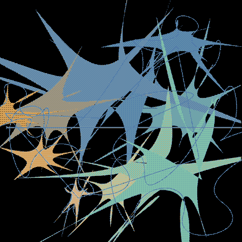
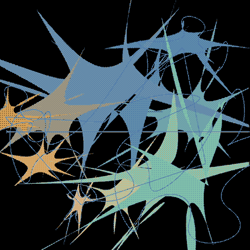

ARTIST BALL 2023: OUTER SPACE
in → October 2023
with → Christine Wang, Kayla Feng
for → RISD CSI
deliverable → poster
Designed the poster for RISD’s annual Artist Ball, themed around outer space. We explored stars and supernovas, balancing organic, fluid forms with bold, sharp type.
Explorations began in Illustrator, later moving into Photoshop using the curve and gradient map tool to create new imagery out of the same base forms.
 
